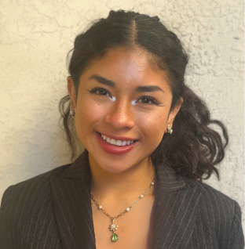
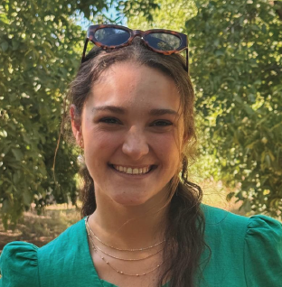

Post-Doctoral Associate | sugrani@scripps.edu LinkedIn OrcID
I am a chemical engineer by training with a keen interest in computational structural biology. During my master's and subsequent research fellowship at the Indian Institute of Technology Bombay, I engaged in experimental research on spray drying of lipid-encapsulated drug nanoparticles and flavor particles. As a chemical engineering PhD student at Purdue University, my work aimed to understand protein-ligand-solvent interactions to improve structure-based drug discovery. I employed molecular modeling techniques alongside machine learning models to build structure-property relationships. Here, my research will focus on addressing the challenges and limitations of applying molecular docking to RNA targets, discovery of RNA therapeutics, and RNA structure prediction.
Kellogg Graduate Fellow | cali@scripps.edu LinkedIn OrcID
I received my bachelor's degree in Biology from the University of Pennsylvania. At Penn, I conducted undergraduate and post-baccalaureate research in the lab of Dr. Shelley Berger, where I studied epigenetic regulators of senescence and aging as well as gene activation by nuclear speckles. I then worked at Aro Biotherapeutics as part of the preclinical research team, developing protein-siRNA conjugate drugs for rare genetic disorders and immune-mediated diseases. After matriculating at the Skaggs Graduate School of Chemical and Biological Sciences in 2023, I joined the Ken Lab as a PhD student. I am interested in studying RNA structural dynamics of HIV using biologically-relevant models and am excited about the application of these findings to RNA-targeted drug development.
 Lui Suzuki-Williams
Lui Suzuki-WilliamsGraduate Student - UCSD MSTP | LSuzuki@scripps.edu LinkedIn OrcID

Kimberly CruzResearch Technician | KimberlyC@scripps.edu LinkedIn
I graduated from the University of San Diego with a bachelor’s degree in Biochemistry and a minor in Theater. As an undergraduate, I worked in Dr. Anthony Bell’s lab investigating how peptide nucleic acid modifications influence the structural stability and HMGB1 binding behavior of four-way DNA junctions. I then expanded my research experience at the University of Michigan, studying the maturation of iPSC-derived cardiomyocytes and the role of extracellular matrix interactions in regulating contractile development. Most recently, in Dr. Ryan McGorty’s lab, I examined how ionizing radiation alters the viscoelastic properties of alginate hydrogels containing breast cancer cells to advance 3D in vitro tumor modeling. These experiences have shaped my interest in nucleic acid engineering and its impact on cellular behavior. I am now joining Dr. Ken’s team and am excited to explore RNA structural dynamics and its potential as a therapeutic modality.

Trinidad KellemanUndergraduate Intern | LinkedIn
I graduated from the University of San Diego with a bachelor’s degree in Biochemistry and a minor in Theater. As an undergraduate, I worked in Dr. Anthony Bell’s lab investigating how peptide nucleic acid modifications influence the structural stability and HMGB1 binding behavior of four-way DNA junctions. I then expanded my research experience at the University of Michigan, studying the maturation of iPSC-derived cardiomyocytes and the role of extracellular matrix interactions in regulating contractile development. Most recently, in Dr. Ryan McGorty’s lab, I examined how ionizing radiation alters the viscoelastic properties of alginate hydrogels containing breast cancer cells to advance 3D in vitro tumor modeling. These experiences have shaped my interest in nucleic acid engineering and its impact on cellular behavior. I am now joining Dr. Ken’s team and am excited to explore RNA structural dynamics and its potential as a therapeutic modality.
 Kemal Ozkirsehirli
Kemal OzkirsehirliUndergraduate Summer Intern | LinkedIn
I graduated from the University of San Diego with a bachelor’s degree in Biochemistry and a minor in Theater. As an undergraduate, I worked in Dr. Anthony Bell’s lab investigating how peptide nucleic acid modifications influence the structural stability and HMGB1 binding behavior of four-way DNA junctions. I then expanded my research experience at the University of Michigan, studying the maturation of iPSC-derived cardiomyocytes and the role of extracellular matrix interactions in regulating contractile development. Most recently, in Dr. Ryan McGorty’s lab, I examined how ionizing radiation alters the viscoelastic properties of alginate hydrogels containing breast cancer cells to advance 3D in vitro tumor modeling. These experiences have shaped my interest in nucleic acid engineering and its impact on cellular behavior. I am now joining Dr. Ken’s team and am excited to explore RNA structural dynamics and its potential as a therapeutic modality.
Previous members
Research TechniciansJacob Scherba LinkedIn OrcID | 2024-2025
Currently a PhD student in Bioengineering at The University of Pennsylvania
Undergraduate Interns
Ella Kim LinkedIn | Summer-Fall 2025
Currently an undergraduate student at the University of California San Diego
Priya Singh LinkedIn | Summer 2025
Currently an undergraduate student at the University of California San Diego
Emily Lahr LinkedIn | Summer 2025
Currently an undergraduate student at Southwestern College
Paolo Sinopoli LinkedIn | Summer 2025
Currently an undergraduate student at The Ohio State University
Jenny Nguyen LinkedIn | Summer 2024
Currently a PhD student in Biochemistry at Colorado University - Boulder
Barbara Zazueta Gonzalez LinkedIn | Summer-Fall 2024
Currently an undergraduate student at San Diego State University